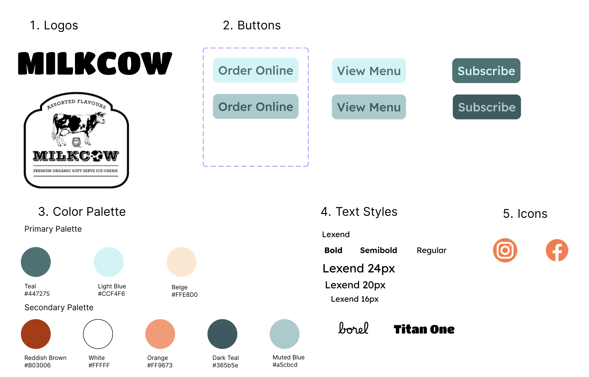

Timeline: March 2025
Skills: Figma, HTML, CSS
Many web pages have usability issues pertaining to design, learnability,
and accessibility.
I redesigned the website for Milkcow Café IL.
While the content is straightforward, it is presented in a way that feels
cluttered and lacks visual cohesion.
The current home page of Milkcow has a few issues that make it hard for users to navigate:
WebAIM WAVE, an online accessibility tool, reports 23 contrast errors and
21 alt text errors, corroborating my own findings.
First, I used Figma to create a visual style guide with a more cohesive color scheme and font style.
Next, I designed a computer mockup.
To demonstrate responsiveness for smaller screens:
My final deployed webpage
made with HTML and CSS
addresses the original design, learnability, and accessibility issues.
WebAIM WAVE reports 0 contrast errors and 0 alt text errors on my redesigned page.
This project demonstrates the importance of web design for diverse users’ experiences.